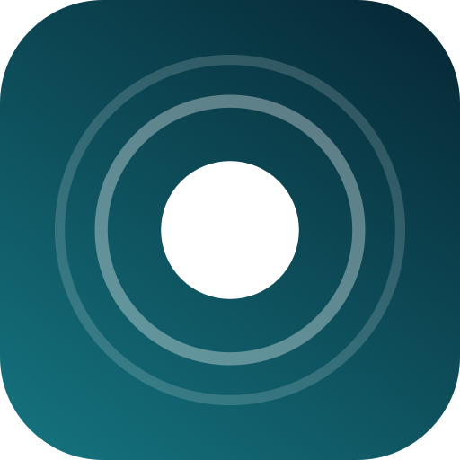
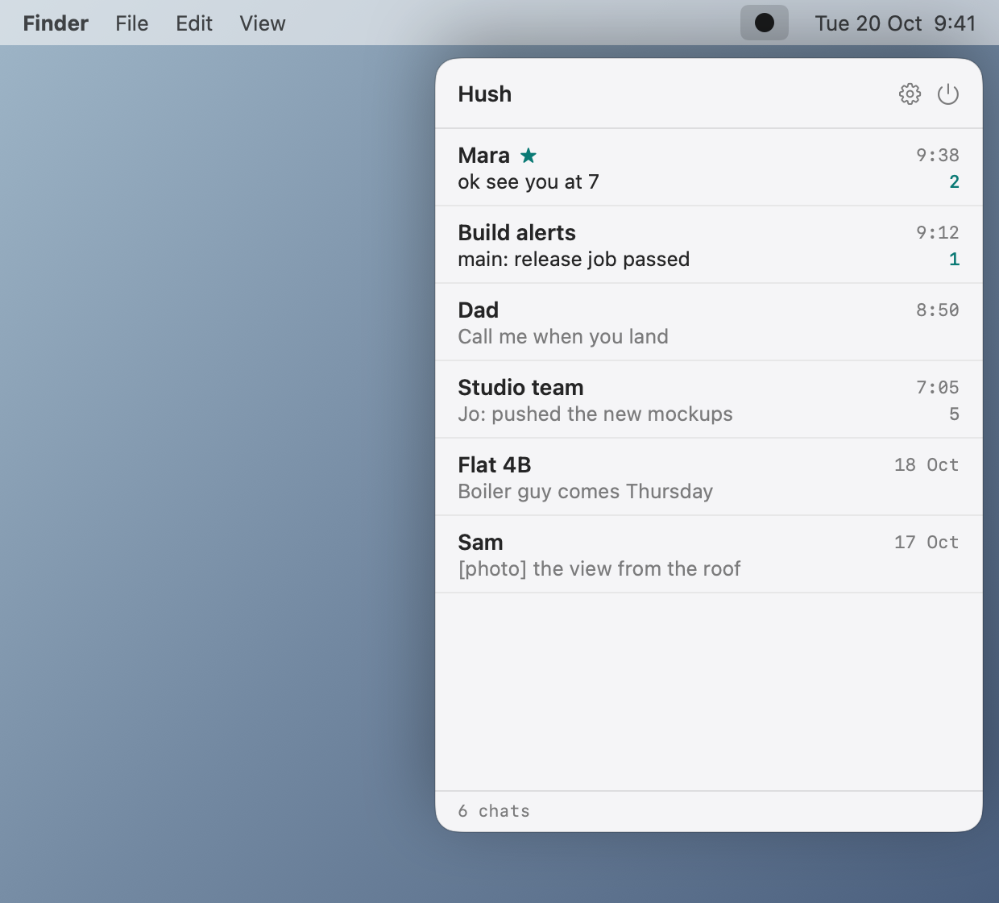
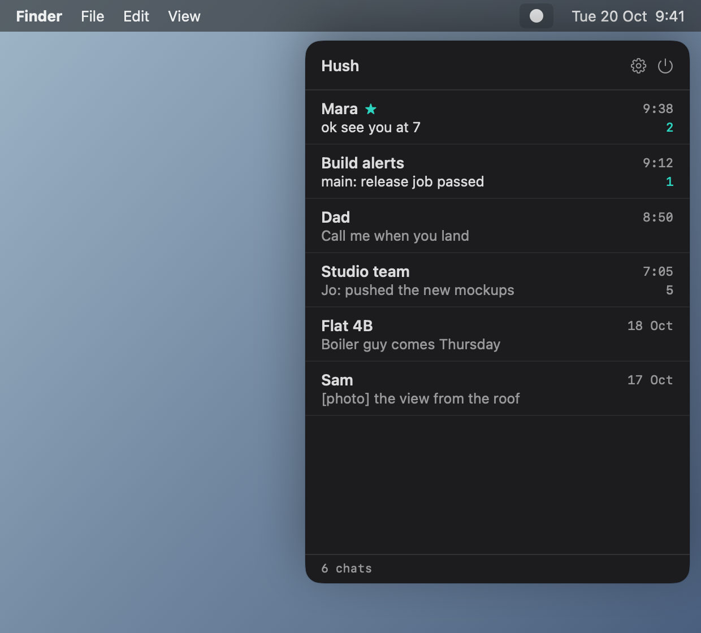
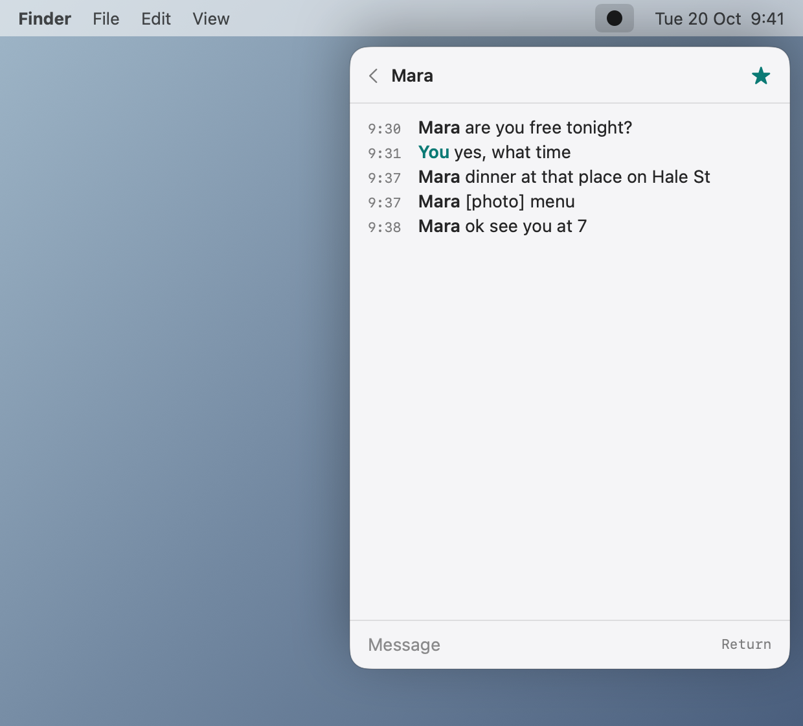
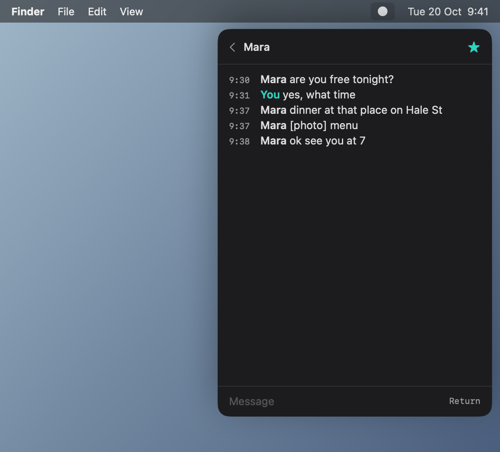
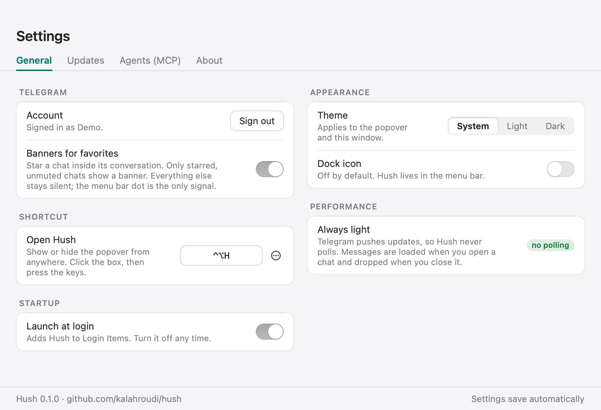
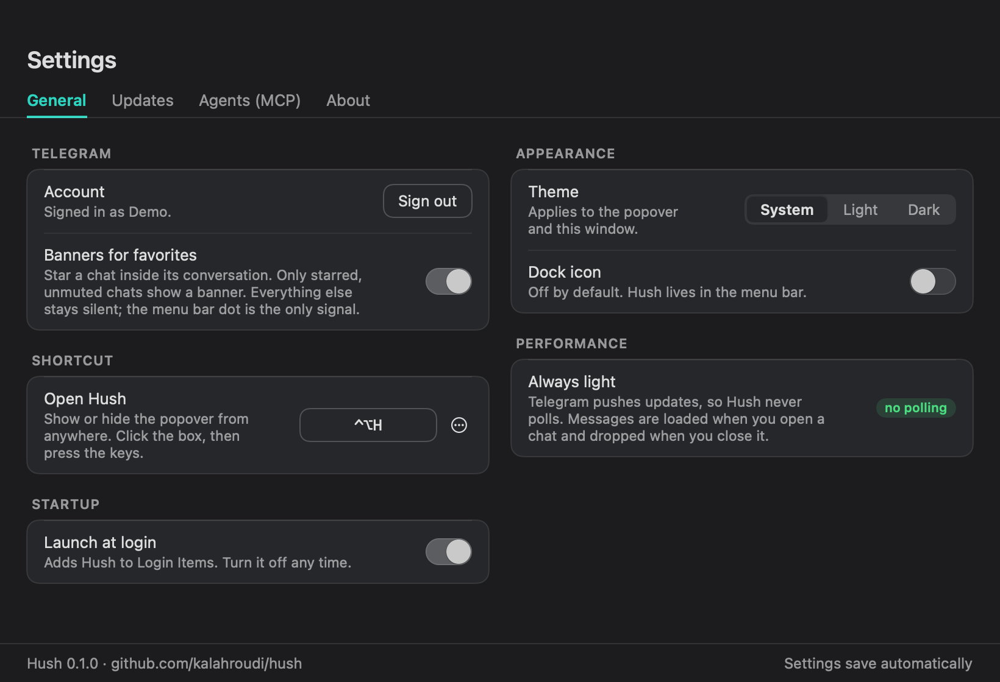
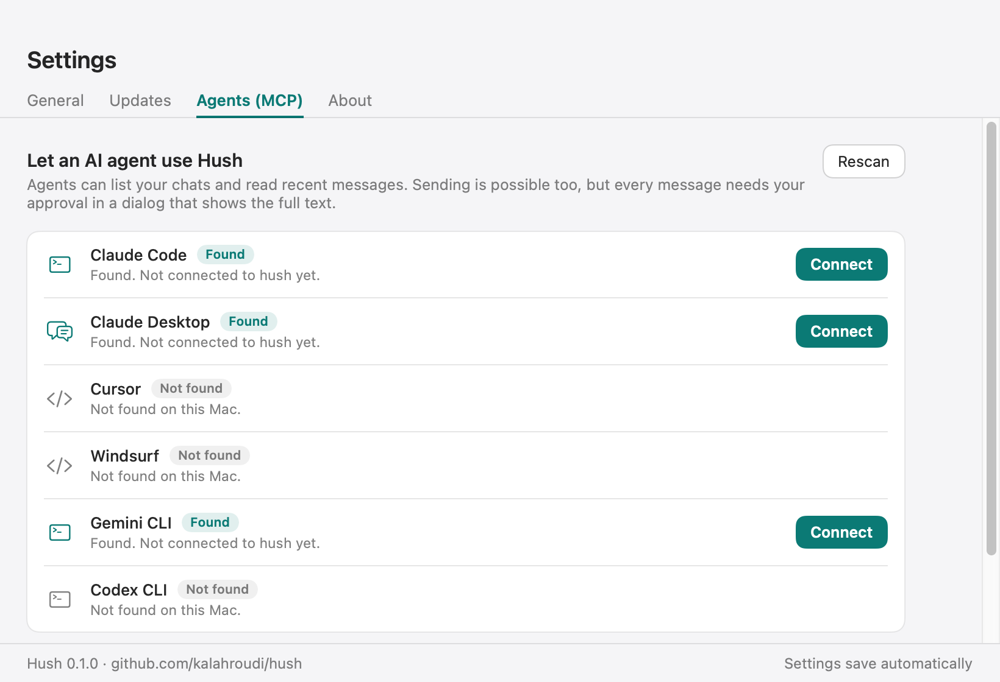

Telegram as plain text in your Mac menu bar. A list of chats, one conversation, one box to type in. Agents get the same text through MCP.




One dot in the menu bar: filled when something unread is waiting, outlined when you are caught up. No badges, no sounds. Star a chat to get banners for it only.
Chats, lines, one box. Photos and files show as a marker like [photo] and are never downloaded. No stickers, search, replies or forwards.
About 4 MB. Telegram pushes updates, so nothing polls. The interface is destroyed when closed and no message database is kept.
A built-in MCP server lists chats, reads messages and, with your approval every time, sends.
curl -fsSL https://raw.githubusercontent.com/kalahroudi/hush/main/scripts/install.sh | bash
Setup downloads TDLib (Telegram's official library) into Hush's own folder, no Homebrew needed, and asks for a free API ID and hash from my.telegram.org/apps. Then sign in with your phone number.
If you download the DMG in a browser, macOS blocks the first launch because Hush is not notarized yet. Open Hush once, then go to System Settings, Privacy & Security, and click Open Anyway. The install command above avoids this.
| Tool | Does | Changes anything |
|---|---|---|
hush_status | Signed-in account, unread count | no |
hush_list_chats | Chats with last line and unread | no |
hush_read | Latest messages of a chat, without marking them read | no |
hush_send | Sends as you | asks you every time |
claude mcp add hush --scope user -- /Applications/Hush.app/Contents/MacOS/hush-mcp


